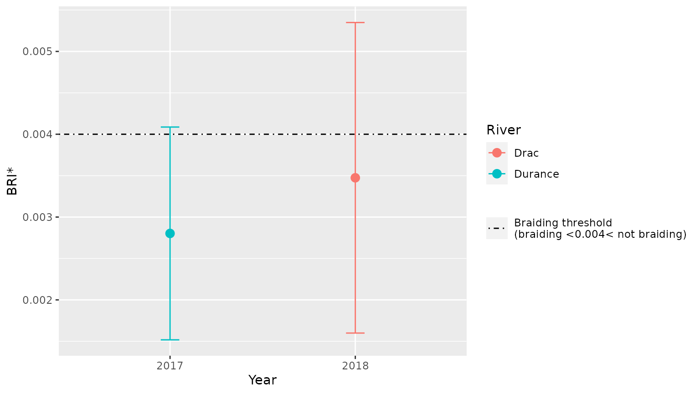
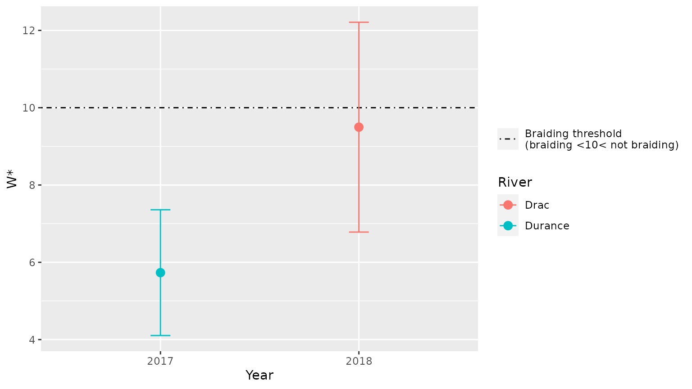

braidHymo.RmdOne type (1 x rivdata) or two types of files (n x rivdata + rivers) must be provided: see details below.
rivdata
There must be as many rivdata files as there are rivers considered.
One rivdata file corresponds to
ID)RASTERVALU)rivers (optional)
To calculate the indices on multiple rivers, a table rivers containing information about the rivers should be provided.
The table should contain
rivdata filepaths)area)points_space)rivdata filepath (typically named filepath)Other columns might refer to e.g. river name, year, etc.
rivers=readr::read_csv("../data-raw/rivers.csv") %>%
mutate(filepath=paste0("../data-raw/",filepath)) %>%
mutate(year=as.factor(year))
#> Rows: 2 Columns: 6
#> ── Column specification ────────────────────────────────────────────────────────
#> Delimiter: ","
#> chr (3): river, reach, filepath
#> dbl (3): year, area, points_space
#>
#> ℹ Use `spec()` to retrieve the full column specification for this data.
#> ℹ Specify the column types or set `show_col_types = FALSE` to quiet this message.
# Display the resulting table:
rivers
#> # A tibble: 2 × 6
#> river reach year area points_space filepath
#> <chr> <chr> <fct> <dbl> <dbl> <chr>
#> 1 Drac Chabottes 2018 253 1 ../data-raw/Drac_Chabottes_2018.txt
#> 2 Durance Brillanne 2017 7850 1 ../data-raw/Durance_Brillanne_2017…rivdata with braidHymo_read()
data_Drac=braidHymo_read("../data-raw/Drac_Chabottes_2018.txt")
# Display the first lines of the resulting table:
head(data_Drac)
#> # A tibble: 6 × 2
#> ID_XS Z
#> <int> <dbl>
#> 1 232 1030.
#> 2 231 1030.
#> 3 231 1030.
#> 4 231 1030.
#> 5 231 1030.
#> 6 231 1030.
result_Drac=braidHymo_one(data_Drac,
area=253,
points_space=1)
#> Warning in braidHymo_one(data_Drac, area = 253, points_space = 1): The cross-
#> sections with ID 232 contain only one measure.
# Display the first lines of the resulting table:
head(result_Drac)
#> # A tibble: 6 × 6
#> Nb_mean_meas XS_onlyone variable type stat value
#> <dbl> <dbl> <chr> <chr> <chr> <dbl>
#> 1 109. 0.431 BRI_mean BRI* mean 0.00347
#> 2 109. 0.431 BRI_SD BRI* SD 0.00187
#> 3 109. 0.431 BRI_min BRI* min 0.00114
#> 4 109. 0.431 BRI_max BRI* max 0.0136
#> 5 109. 0.431 W_mean W* mean 9.50
#> 6 109. 0.431 W_SD W* SD 2.71Here, we generalise this to 2 rivers.
The function braidHymo() retrieves from table rivers all the necessary information about rivers, and paths to rivdata filepaths.
result=braidHymo(rivers)
#> Warning in .f(rivdata = .l[[1L]][[i]], area = .l[[2L]][[i]], points_space
#> = .l[[3L]][[i]], : The cross-sections with ID 232 contain only one measure.
# Display the first lines of the resulting table:
head(result)
#> # A tibble: 6 × 12
#> river reach year area points_space filepath Nb_mean_meas XS_onlyone variable
#> <chr> <chr> <fct> <dbl> <dbl> <chr> <dbl> <dbl> <chr>
#> 1 Drac Chab… 2018 253 1 ../data… 109. 0.431 BRI_mean
#> 2 Drac Chab… 2018 253 1 ../data… 109. 0.431 BRI_SD
#> 3 Drac Chab… 2018 253 1 ../data… 109. 0.431 BRI_min
#> 4 Drac Chab… 2018 253 1 ../data… 109. 0.431 BRI_max
#> 5 Drac Chab… 2018 253 1 ../data… 109. 0.431 W_mean
#> 6 Drac Chab… 2018 253 1 ../data… 109. 0.431 W_SD
#> # … with 3 more variables: type <chr>, stat <chr>, value <dbl>It is then possible to graphically display the results for these rivers using function braidHymo_plot():
braidHymo_plot(result,index="BRI*", position=year, color=river)
braidHymo_plot(result,index="W*", position=year, color=river)
When using this package, please refer to Devreux et al. (2021).